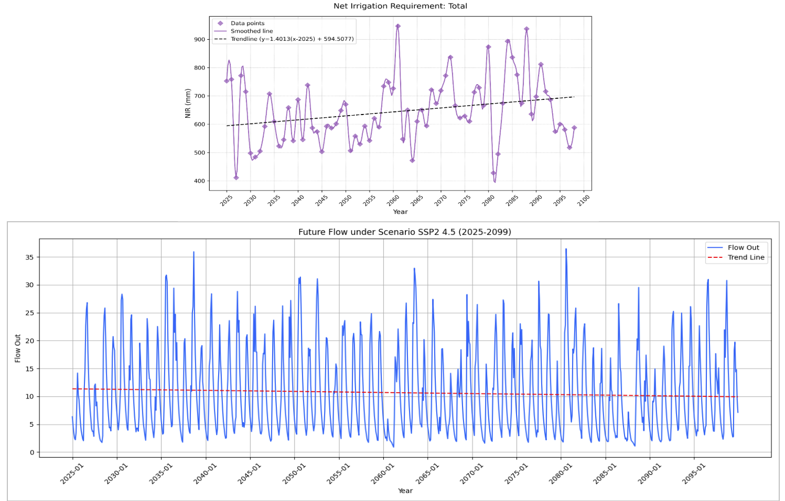
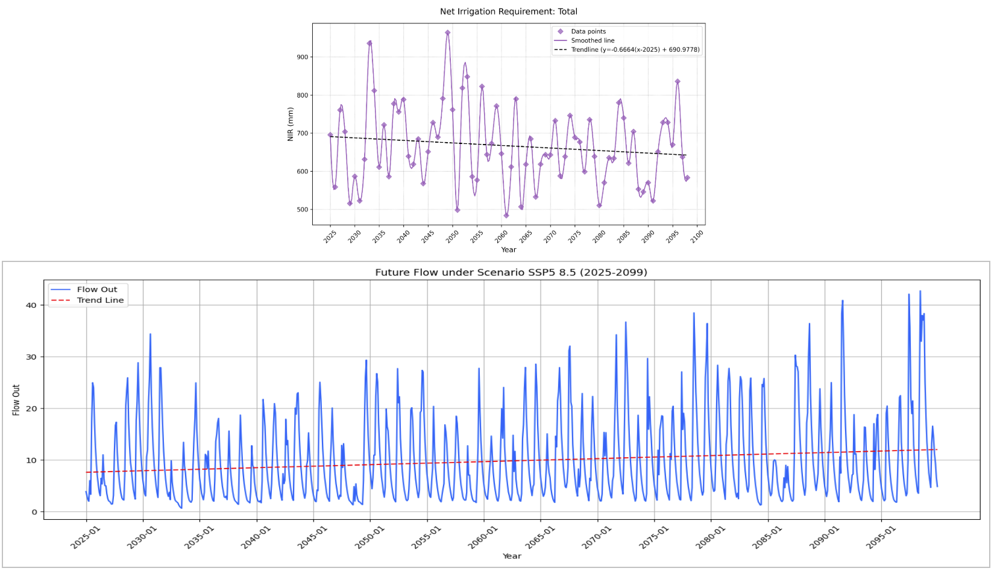

Overview
This project assessed the sustainability of irrigation in the Khageri River Basin, a spring-fed system in Bagmati Province, Nepal, using the Soil and Water Assessment Tool (SWAT). The study simulated stream flow under two climate scenarios (SSP2-4.5 and SSP5-8.5) to evaluate water availability and used FAO’s AquaCrop model to estimate Net Irrigation Water Requirements (NIWR) for maize, paddy, and wheat. The findings highlight challenges in flood management and irrigation planning under changing climate conditions.
Study Area
- Location: Khageri River Basin, Bagmati Province, Nepal, draining into the East Rapti River.
- Basin Type: Spring-fed, supporting irrigation for 3,900 ha of agricultural land.
- Land Use: Predominantly agricultural, with crops including maize, paddy, and wheat.
- Key Issues: Erratic rainfall, rising temperatures, and flow variability due to climate change.
Methodology
- SWAT Modelling: Configured SWAT with land use data from ICIMOD, soil data from NARC, and climate inputs (precipitation, temperature, wind speed, relative humidity, solar radiation). Calibrated and validated for 2006–2015 across multiple sites (Khageri, Manahari, Rajaiya rivers), achieving NSE of 0.93 and PBIAS of -8.43%.
- AquaCrop Modelling: Simulated NIWR for maize (pre-monsoon), paddy (monsoon), and wheat (winter) using NARC crop data, SPAW for soil properties, and non-limiting nutrient conditions. NIWR calculated as ET_crop minus effective precipitation.
- Climate Scenarios: Analyzed future stream flow and NIWR under SSP2-4.5 (moderate emissions) and SSP5-8.5 (high emissions) scenarios to assess climate impacts on water availability and irrigation demand.
Results
- Historical Flow: Analysis of 2006–2015 data showed a high baseflow proportion (77%) compared to surface runoff (23%), indicating a stable, groundwater-fed system.
- SSP2-4.5 Scenario: Projected decreasing water availability in the Khageri River Basin, with reduced runoff and increasing NIWR trends, posing challenges for irrigation sustainability.
- SSP5-8.5 Scenario: Projected increasing water availability with higher peak flows but declining baseflow, increasing flood risks while NIWR trends decrease.
- Implications: Both scenarios highlight the need for adaptive water management strategies to address water scarcity (SSP2-4.5) and flood risks (SSP5-8.5).
Significance
This study provides critical insights into the impacts of climate change on water resources in Nepal’s spring-fed river basins. By integrating SWAT and AquaCrop, it offers a robust framework for evaluating irrigation sustainability and informing policy decisions for flood management and agricultural water planning in South Asia.
Visuals
Figure: NIWR and Flow trends under SSP2-4.5 scenario in Khageri River Basin.
Figure: NIWR and Flow trends under SSP5-8.5 scenario in Khageri River Basin.
Future Work
- Incorporate high-resolution climate models to improve flow predictions.
- Integrate machine learning to enhance NIWR predictions under extreme climate events.
- Develop adaptation strategies for irrigation systems, such as water storage or crop diversification, to mitigate climate impacts.